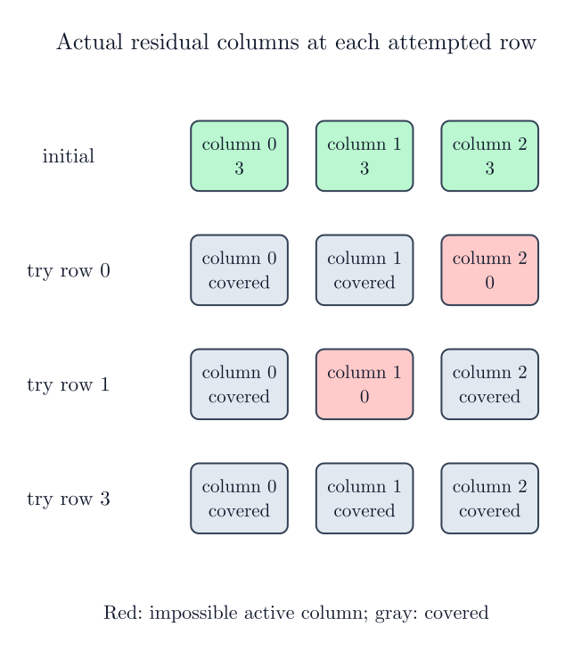
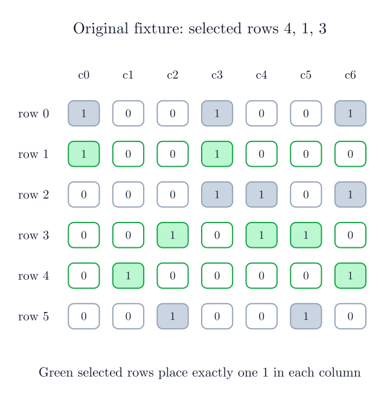
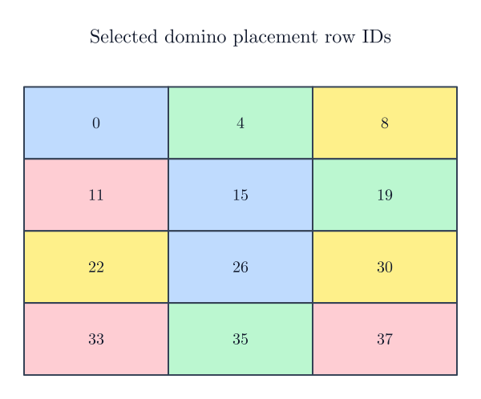
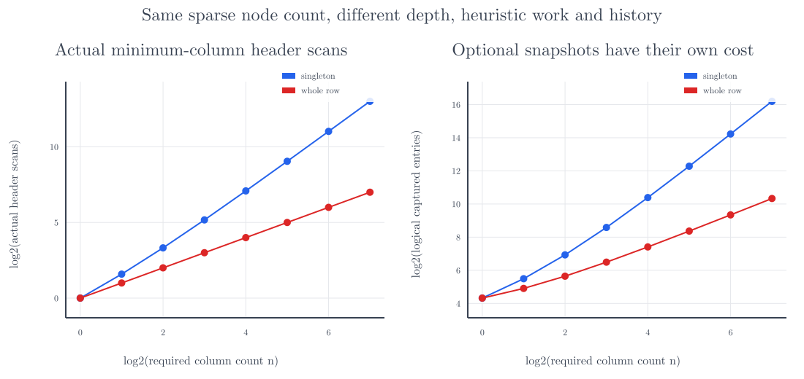
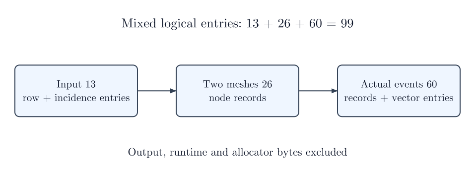

Exact Cover: Actual Choices, Dancing Links and Complete Restoration
Abstract
Choose rows of a binary incidence matrix so that every required column appears exactly once. We start with three columns and four rows: two candidate choices fail, then a third succeeds. The same native C++ kernel captures actual choices, residual column sizes and initial/final dancing-links meshes. It retains the original seven-column example and 4×6 domino tiling, while exposing finite input contracts, restoration work and optional history costs. The solver finds the first cover; it neither enumerates all covers nor makes an exponential search cheap in every case.
Three columns: two failed choices, then a cover
Use rows 0={0,1}, 1={0,2}, 2={1,2}, 3={0,1,2}. Every column has three candidates initially, so the minimum-size tie picks column zero. Choosing row zero leaves column two with no compatible row; choosing row one leaves column one with none. After undoing each failed branch, row three covers all columns and succeeds. Pair rows alone cannot cover an odd number of required columns without an overlap or omission.
The diagram reads actual residual column-size snapshots. A gray box means the column is already covered, a red zero is an active impossible column, and a green number is the actual remaining candidate count. The trace continues with restoration after the first solution is saved.
#include <dm/dm.hpp>
int main(){
std::filesystem::create_directories("build");const auto t=dm::algorithms::exact_cover_trace(3,{{0,1},{0,2},{1,2},{0,1,2}});const auto& w=t.outcome.work;
std::print("Tiny: solved {}; selected row {}; attempts {}; dead ends {}; maximum depth {}; events {}; entries {}; actual mesh restored {}.\n",t.outcome.result.solved,t.outcome.result.rows.at(0),w.row_attempts,w.dead_ends,w.maximum_depth,t.steps.size(),t.captured_entries,t.initial_nodes==t.final_nodes);
std::print("Restoration: covers {}; uncovers {}; row restorations {}; header writes {}; data writes {}; size updates {}.\n\n",w.covers,w.uncovers,w.row_restorations,w.header_link_writes,w.data_link_writes,w.column_size_updates);
const std::array<std::string_view,6> names{"choose","select","unselect","dead end","solution","finished"};
std::print("| actual event | kind | depth | column | row | residual sizes | partial rows |\n| ---: | :--- | ---: | ---: | ---: | :--- | :--- |\n");
for(std::size_t i=0;i<t.steps.size();++i){const auto& e=t.steps[i];std::print("| {} | {} | {} | {} | {} |",i,names.at(static_cast<std::size_t>(e.kind)),e.depth,e.column,e.row);for(int value:e.column_sizes)std::print(" {}",value);std::print(" | ");for(int row:e.partial_rows)std::print("{} ",row);std::print("|\n");}
dm::graphics::Diagram d(64,1100);dm::graphics::DiagramNodeStyle cell;cell.width=1.7;cell.height=1.1;cell.font_size=21;int line=0;
for(const auto& e:t.steps)if((e.kind==dm::algorithms::ExactCoverEvent::choose_column&&e.depth==0)||e.kind==dm::algorithms::ExactCoverEvent::select_row){const double y=-2.*line++;
d.text({-3,y},e.kind==dm::algorithms::ExactCoverEvent::choose_column?"initial":std::format("try row {}",e.row),23);
for(std::size_t c=0;c<e.column_sizes.size();++c){const int n=e.column_sizes[c];cell.fill=n<0?dm::graphics::RGB{226,232,240}:n==0?dm::graphics::RGB{254,202,202}:dm::graphics::RGB{187,247,208};d.node(std::format("{}:{}",line,c),{2.2*c,y},std::format("column {}\n{}",c,n<0?"covered":std::to_string(n)),cell);}}
d.text({1,2},"Actual residual columns at each attempted row",26).text({1,-8},"Red: impossible active column; gray: covered",22).save_svg("build/exact_cover_tiny.svg");
}Tiny: solved true; selected row 3; attempts 3; dead ends 2; maximum depth 1; events 13; entries 99; actual mesh restored true. Restoration: covers 5; uncovers 5; row restorations 3; header writes 20; data writes 28; size updates 14.
| actual event | kind | depth | column | row | residual sizes | partial rows |
|---|---|---|---|---|---|---|
| 0 | choose | 0 | 0 | -1 | 3 3 3 | |
| 1 | select | 1 | 0 | 0 | -1 -1 0 | 0 |
| 2 | choose | 1 | 2 | -1 | -1 -1 0 | 0 |
| 3 | dead end | 1 | 2 | -1 | -1 -1 0 | 0 |
| 4 | unselect | 0 | 0 | 0 | -1 1 1 | |
| 5 | select | 1 | 0 | 1 | -1 0 -1 | 1 |
| 6 | choose | 1 | 1 | -1 | -1 0 -1 | 1 |
| 7 | dead end | 1 | 1 | -1 | -1 0 -1 | 1 |
| 8 | unselect | 0 | 0 | 1 | -1 1 1 | |
| 9 | select | 1 | 0 | 3 | -1 -1 -1 | 3 |
| 10 | solution | 1 | -1 | -1 | -1 -1 -1 | 3 |
| 11 | unselect | 0 | 0 | 3 | -1 1 1 | |
| 12 | finished | 0 | -1 | -1 | 3 3 3 |

Algorithm X and why reversible links preserve alternatives
Let A be the binary incidence matrix and x a binary row-selection vector. Exact cover asks for
Every current partial selection consists of disjoint rows. If required columns remain, choose one c and try each remaining row containing c. Any complete cover extending the partial selection must use exactly one such row, so these branches exhaust the possibilities. Removing all columns of a selected row, and all conflicting rows, preserves exactly its compatible extensions. An empty required column makes that branch impossible; no remaining required columns means a cover has been found. Induction over these branches gives soundness and completeness of depth-first search, provided each failed branch restores the previous state before the next alternative.
Dancing links stores each incidence in a circular row list and a circular column list, with a header for each required column. For a node x, unlinking it vertically performs
Its own saved U[x],D[x] remain available. Restoring in inverse traversal order performs U[D[x]]=x and D[U[x]]=x. Column headers are similarly removed/restored in their horizontal list. A complete column cover performs many such local operations and updates column sizes; it is not just four assignments for an entire arbitrary row or column.
The canonical implementation uses integer node indices and an explicit search stack. It preserves the minimum-size-column heuristic, earliest column ties and original row order, while avoiding recursive call-stack growth. It fully unwinds after success as well as failure, retaining the first solution separately. The solution event therefore precedes cleanup; an unselect event can mean successful cleanup rather than a failed branch. Actual node snapshots verify complete restoration, without rerunning another explanatory solver.
Retain the original seven-column fixture
The original six-row example returns the row sequence 4,1,3. That is a search order, not sorted row order. Those sets cover every column once. We also run the literal matrix in Knuth's paper. The original report's fixture changes row order and omits one incidence from one of the paper's rows, so we identify the two fixtures separately rather than calling them the same matrix. Both are explicitly defined below.
#include <dm/dm.hpp>
int main(){
std::filesystem::create_directories("build");const std::vector<std::vector<int>> rows{{0,3,6},{0,3},{3,4,6},{2,4,5},{1,6},{2,5}};const auto t=dm::algorithms::exact_cover_trace(7,rows);
const auto paper=dm::algorithms::exact_cover_trace(7,{{2,4,5},{0,3,6},{1,2,5},{0,3},{1,6},{3,4,6}});
std::print("Original seven-column selection:");for(int row:t.outcome.result.rows)std::print(" {}",row);std::print(". Literal paper-matrix selection:");for(int row:paper.outcome.result.rows)std::print(" {}",row);std::print(".\n");
std::print("Original nodes {}; events {}; captured entries {}; scans {}; restored mesh {}.\n\n",t.initial_nodes.size(),t.steps.size(),t.captured_entries,t.outcome.work.column_scans,t.initial_nodes==t.final_nodes);
std::print("| original row | selected | column memberships |\n| ---: | :--- | :--- |\n");
dm::graphics::Diagram d(64,1100);dm::graphics::DiagramNodeStyle cell;cell.width=.8;cell.height=.65;cell.font_size=19;cell.padding=5;
for(std::size_t r=0;r<rows.size();++r){const bool selected=std::find(t.outcome.result.rows.begin(),t.outcome.result.rows.end(),int(r))!=t.outcome.result.rows.end();std::print("| {} | {} |",r,selected);for(int c:rows[r])std::print(" {}",c);std::print(" |\n");d.text({-1.3,-1.05*r},std::format("row {}",r),21);
for(int c=0;c<7;++c){const bool present=std::find(rows[r].begin(),rows[r].end(),c)!=rows[r].end();cell.fill=present?(selected?dm::graphics::RGB{187,247,208}:dm::graphics::RGB{203,213,225}):dm::graphics::RGB{255,255,255};cell.border=selected?dm::graphics::RGB{22,163,74}:dm::graphics::RGB{148,163,184};d.node(std::format("{}:{}",r,c),{1.15*c,-1.05*r},present?"1":"0",cell);}}
for(int c=0;c<7;++c)d.text({1.15*c,1},std::format("c{}",c),20);
d.text({3,2.2},"Original fixture: selected rows 4, 1, 3",26).text({3,-6.7},"Green selected rows place exactly one 1 in each column",22).save_svg("build/exact_cover_original.svg");
}Original seven-column selection: 4 1 3. Literal paper-matrix selection: 3 0 4. Original nodes 23; events 11; captured entries 170; scans 15; restored mesh true.
| original row | selected | column memberships |
|---|---|---|
| 0 | false | 0 3 6 |
| 1 | true | 0 3 |
| 2 | false | 3 4 6 |
| 3 | true | 2 4 5 |
| 4 | true | 1 6 |
| 5 | false | 2 5 |

Port the original domino-board encoding into the core
A rectangular domino placement covers two adjacent board cells. Make each cell a required column and each possible horizontal/vertical placement a row. A selected exact cover is then precisely a tiling: every cell is covered once, with no overlaps or gaps. Identical dominoes do not need separate piece-identity columns. The reusable builder keeps the original row-major cell order, adding a horizontal placement before a vertical placement at each cell. Its first 4×6 tiling therefore keeps the original placement IDs.
For h,w>0 there are hw required cells and h(w-1)+(h-1)w placements, each with two incidences. The 4×6 board has 24 cells, 38 placements and 101 dancing-links nodes including headers/root. Odd area makes a domino tiling impossible. For a full rectangle, even area is also sufficient: one dimension is even, so parallel domino strips construct a tiling. This sufficiency does not extend to arbitrary boards with holes.
#include <dm/dm.hpp>
int main(){
std::filesystem::create_directories("build");const auto problem=dm::algorithms::domino_exact_cover(4,6);const auto t=dm::algorithms::exact_cover_trace(problem.num_columns,problem.placements);
std::print("Original 4x6: cells {}; placements {}; nodes {}; solved {}; dominoes {}; restored mesh {}.\n",problem.num_columns,problem.placements.size(),t.initial_nodes.size(),t.outcome.result.solved,t.outcome.result.rows.size(),t.initial_nodes==t.final_nodes);
std::print("Selected placement IDs:");for(int row:t.outcome.result.rows)std::print(" {}",row);std::print(".\n\n");
std::print("| board | cells | placement rows | solved | selected dominoes |\n| :--- | ---: | ---: | :--- | ---: |\n");
for(const auto [h,w]:std::vector<std::pair<int,int>>{{0,6},{1,1},{1,2},{2,3},{3,3},{4,6},{6,8}}){const auto p=dm::algorithms::domino_exact_cover(h,w);const auto r=dm::algorithms::exact_cover_work(p.num_columns,p.placements);std::print("| {}x{} | {} | {} | {} | {} |\n",h,w,p.num_columns,p.placements.size(),r.result.solved,r.result.rows.size());}
dm::algorithms::domino_tiling_diagram(problem,t.outcome.result,90,1100).save_svg("build/exact_cover_domino.svg");
}Original 4x6: cells 24; placements 38; nodes 101; solved true; dominoes 12; restored mesh true. Selected placement IDs: 0 4 8 11 15 19 22 33 26 35 30 37.
| board | cells | placement rows | solved | selected dominoes |
|---|---|---|---|---|
| 0x6 | 0 | 0 | true | 0 |
| 1x1 | 1 | 0 | false | 0 |
| 1x2 | 2 | 1 | true | 1 |
| 2x3 | 6 | 7 | true | 3 |
| 3x3 | 9 | 12 | false | 0 |
| 4x6 | 24 | 38 | true | 12 |
| 6x8 | 48 | 82 | true | 24 |

Equal node counts can hide very different search and history costs
Compare n singleton rows, one for each column, with one row containing all n columns. Both matrices have n incidences and 2n+1 mesh nodes. The singleton instance descends n levels, scanning n,n-1,...,1 active headers, for n(n+1)/2 scans. The whole-universe row needs one column choice, scanning n headers, and reaches its cover at depth one. Both perform n covers and n uncovers. Singleton rows need no data-node unlink writes; the whole row gives 4(n-1) data-link writes including restoration. These counts come from the actual kernels below.
The sparse runtime mesh is linear in the problem representation, while optional full residual snapshots can grow quadratically even on these simple inputs. Under the capture convention in the next section, the measured singleton history has (9n^2+23n+8)/2 entries, versus 10n+10 for the whole-row instance. The former follows by summing the full n-column snapshot and actual partial-row depths over all choose, select, solution, unselect and finished events. This is a property of this trace format and these instances, not a universal search bound. Minimum-size column selection also has a real scan cost; its heuristic does not make general exact cover polynomial-time.
#include <dm/dm.hpp>
int main(){
std::filesystem::create_directories("build");std::vector<double> sizes,scan_single,scan_whole,history_single,history_whole;
std::print("| columns n | nodes in both | singleton scans | whole-row scans | singleton entries | whole-row entries |\n| ---: | ---: | ---: | ---: | ---: | ---: |\n");
for(std::size_t n:{1,2,4,8,16,32,64,128}){std::vector<std::vector<int>> rows(n);std::vector<int> whole(n);for(std::size_t i=0;i<n;++i){rows[i]={int(i)};whole[i]=i;}const auto a=dm::algorithms::exact_cover_trace(n,rows),b=dm::algorithms::exact_cover_trace(n,{whole});
if(a.outcome.work.column_scans!=n*(n+1)/2||b.outcome.work.column_scans!=n||a.captured_entries!=(9*n*n+23*n+8)/2||b.captured_entries!=10*n+10||a.initial_nodes.size()!=b.initial_nodes.size())throw std::runtime_error("known exact-cover family failed");
std::print("| {} | {} | {} | {} | {} | {} |\n",n,a.initial_nodes.size(),a.outcome.work.column_scans,b.outcome.work.column_scans,a.captured_entries,b.captured_entries);sizes.push_back(std::log2(n));scan_single.push_back(std::log2(a.outcome.work.column_scans));scan_whole.push_back(std::log2(b.outcome.work.column_scans));history_single.push_back(std::log2(a.captured_entries));history_whole.push_back(std::log2(b.captured_entries));}
auto a=dm::graphics::RPlot::create();a.line(sizes,scan_single,"singleton",{37,99,235}).points(sizes,scan_single,"",{37,99,235},5).line(sizes,scan_whole,"whole row",{220,38,38}).points(sizes,scan_whole,"",{220,38,38},5).title("Actual minimum-column header scans").x_label("log2(required column count n)").y_label("log2(actual header scans)");
auto b=dm::graphics::RPlot::create();b.line(sizes,history_single,"singleton",{37,99,235}).points(sizes,history_single,"",{37,99,235},5).line(sizes,history_whole,"whole row",{220,38,38}).points(sizes,history_whole,"",{220,38,38},5).title("Optional snapshots have their own cost").x_label("log2(required column count n)").y_label("log2(logical captured entries)");
dm::graphics::RLayout::create(1,2).add(a).add(b).size(1100,520).title("Same sparse node count, different depth, heuristic work and history").fit_panels().save_svg("build/exact_cover_work.svg");
}| columns n | nodes in both | singleton scans | whole-row scans | singleton entries | whole-row entries |
|---|---|---|---|---|---|
| 1 | 3 | 1 | 1 | 20 | 20 |
| 2 | 5 | 3 | 2 | 45 | 30 |
| 4 | 9 | 10 | 4 | 122 | 50 |
| 8 | 17 | 36 | 8 | 384 | 90 |
| 16 | 33 | 136 | 16 | 1340 | 170 |
| 32 | 65 | 528 | 32 | 4980 | 330 |
| 64 | 129 | 2080 | 64 | 19172 | 650 |
| 128 | 257 | 8256 | 128 | 75204 | 1290 |

Required-column contracts, complete restoration and capture limits
The API treats every column as required. Encodings with at-most-once constraints, such as N-queens diagonals, require additional modelling or a secondary-column variant. Within one row, each column ID must be distinct and in range; unsorted entries are accepted without reordering. Duplicate complete rows remain separate alternatives. Empty rows are ignored, and an empty required universe succeeds with no selected rows. Negative counts, invalid IDs and repeated incidences fail explicitly. Root/header/incidence node counts and row IDs must fit the checked integer and container geometry before allocation. Existing Sudoku integration tests exercise the same required-column solver.
Work counts include all actual search and restoration operations, with initialization, validation, copying and CPU time excluded. Ordinary result/work calls keep the sparse runtime mesh, explicit stack and owned result, without optional history or capture quotas. Search can still require exponential work. The trace owns input rows, the actual initial/final node records, and event snapshots. Equality of complete initial/final arrays checks all seven integer fields of every node, including links, column identities, row identities and sizes.
Let R be input row count, I incidence count and K=1+C+I the node count. Known base B=R+I+2K counts row records, incidence entries and two full node-record snapshots. Each complete seven-field node counts as one record. Each event adds 1+C+depth: an event record, the full column-size vector and the actual partial-row IDs. B is reserved before graph or copy allocation; each event is reserved before its snapshot copies. The default quota is one million; zero disables only that quota. Ordinary result/work, runtime mesh/stack/validation storage, vector headers, capacities and allocator bytes are excluded. This mixed logical count is not peak RAM. A quota exception means the requested history did not fit; it is not an unsatisfiability verdict, and no partial trace is returned. Large unsatisfiable board tests therefore use the ordinary solver, with bounded trace checks on smaller cases.
#include <dm/dm.hpp>
int main(){
std::filesystem::create_directories("build");const std::vector<std::vector<int>> rows{{0,1},{0,2},{1,2},{0,1,2}};const auto t=dm::algorithms::exact_cover_trace(3,rows,99);bool short_cap=false,base_cap=false;
try{(void)dm::algorithms::exact_cover_trace(3,rows,98);}catch(const std::length_error&){short_cap=true;}
try{(void)dm::algorithms::exact_cover_trace(3,rows,38);}catch(const std::length_error&){base_cap=true;}
std::size_t incidence=0;for(const auto& row:rows)incidence+=row.size();const auto input=rows.size()+incidence,meshes=2*t.initial_nodes.size();std::size_t events=0;for(const auto& e:t.steps)events+=1+t.num_columns+e.partial_rows.size();if(input+meshes+events!=t.captured_entries)throw std::runtime_error("capture certificate failed");
std::print("Tiny quota: input {}; meshes {}; events {}; total {}; one-short rejected {}; base-short rejected {}; disabled-quota total {}.\n",input,meshes,events,t.captured_entries,short_cap,base_cap,dm::algorithms::exact_cover_trace(3,rows,0).captured_entries);
int rejected=0;try{(void)dm::algorithms::exact_cover(-1,{});}catch(const std::invalid_argument&){++rejected;}
for(const auto& bad:std::vector<std::vector<std::vector<int>>>{{{-1}},{{1}},{{0,0}}})try{(void)dm::algorithms::exact_cover(1,bad);}catch(const std::invalid_argument&){++rejected;}
try{(void)dm::algorithms::exact_cover(0,{{0}});}catch(const std::invalid_argument&){++rejected;}
const auto duplicate=dm::algorithms::exact_cover(2,{{},{1,0},{1,0},{}});const auto empty=dm::algorithms::exact_cover(0,{{},{}});bool geometry=false;
try{(void)dm::algorithms::exact_cover_node_count(std::numeric_limits<int>::max(),0,0);}catch(const std::length_error&){geometry=true;}
std::print("Domains: negative-count/negative-ID/high-ID/repeated-incidence/nonempty-zero-universe rejections {}/5; checked geometry rejected {}. Duplicate whole rows choose {}; empty universe solved {} with {} selected rows.\n",rejected,geometry,duplicate.rows.at(0),empty.solved,empty.rows.size());
constexpr int n=4096;std::vector<std::vector<int>> deep(n);for(int i=0;i<n;++i)deep[i]={i};const auto r=dm::algorithms::exact_cover_work(n,deep);
std::print("Deep ordinary search: solved {}; depth {}; chosen rows {}; header scans {}; covers {}; uncovers {}; optional history retained false.\n",r.result.solved,r.work.maximum_depth,r.result.rows.size(),r.work.column_scans,r.work.covers,r.work.uncovers);
dm::graphics::Diagram d(65,1100);dm::graphics::DiagramNodeStyle box;box.width=3.8;box.height=1.6;box.font_size=21;
d.node("input",{0,0},std::format("Input {}\nrow + incidence entries",input),box).node("meshes",{5,0},std::format("Two meshes {}\nnode records",meshes),box).node("events",{10,0},std::format("Actual events {}\nrecords + vector entries",events),box).edge("input","meshes").edge("meshes","events")
.text({5,2.1},std::format("Mixed logical entries: {} + {} + {} = {}",input,meshes,events,t.captured_entries),26).text({5,-1.9},"Output, runtime and allocator bytes excluded",22).save_svg("build/exact_cover_limits.svg");
}Tiny quota: input 13; meshes 26; events 60; total 99; one-short rejected true; base-short rejected true; disabled-quota total 99. Domains: negative-count/negative-ID/high-ID/repeated-incidence/nonempty-zero-universe rejections 5/5; checked geometry rejected true. Duplicate whole rows choose 1; empty universe solved true with 0 selected rows. Deep ordinary search: solved true; depth 4096; chosen rows 4096; header scans 8390656; covers 4096; uncovers 4096; optional history retained false.

The native tests compare all 5,058 binary matrices with up to three columns and four rows, plus 500 seeded random matrices, against an independent subset oracle. Every actual event is checked against an independent set-based residual calculation; complete node lists are checked for circular-link and membership invariants before/after search. All 565 frozen valid legacy results retain the same selected row order. The tests also cover 63 rectangular encodings, actual work/history identities, deep explicit-frame search, ownership, exact quotas, invalid incidence and geometry, and malformed graphics requests. The original invalid-column probe caused a heap-buffer overflow; repeated IDs within a row were previously accepted. Both now produce explicit input errors.
The inputs here are finite set systems and generated board encodings; a real-world dataset would add no evidence about reversible links, search completeness or the exact count identities. All reusable solving, board generation and tiling validation/rendering live in the native core.
Reference
D. E. Knuth (2000), Dancing Links, arXiv:cs/0011047, https://arxiv.org/abs/cs/0011047. The required-column Algorithm X, minimum-size heuristic and reversible index-link operations follow this paper. The explicit search frames, complete success cleanup, checked domains, bounded live snapshots and native board interfaces are datamunge implementation choices.